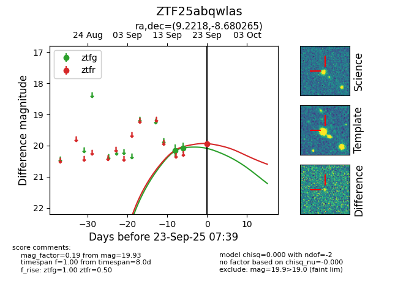
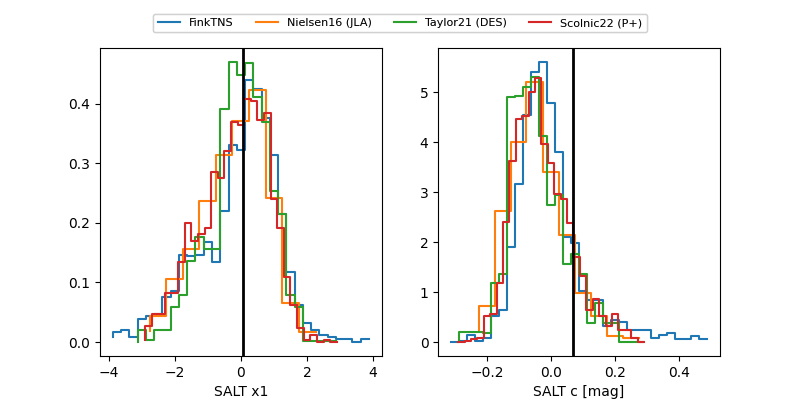

FINK: ZTF25abqwlas
Lasair: ZTF25abqwlas
ALeRCE: ZTF25abqwlas
ZTF25abqwlas (ztf,fink)
equatorial (ra, dec) = (9.2218,-8.68026)
galactic (l, b) = (111.6895,-71.23371)


last ztfg=20.07, ztfr=19.93
2 ztfg, 1 ztfr detections